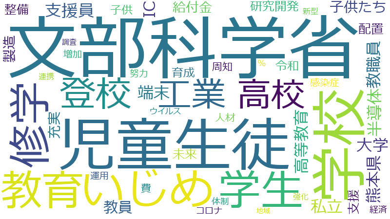

末松信介

大学 、教育 、教師 、学校 、文部科学省 、支援 、令和 、研究 、研修 、学び 、充実 、地域 、指導 、博物館 、児童生徒 、連携 、環境 、課題 、社会 、整備 、推進 、子ども 、教員 、予算 、調査 、子供 、向上 、事業 、教育委員会 、委員会 、改革 、学生 、小学校 、変化 、いじめ 、成果 、能力 、平成 、多様 、施設 、文化 、運用 、強化 、スクール 、改善 、世界 、人材 、生徒 、資質 、国際 、在り方 、学級 、校長 、計画 、ファンド 、学習 、役割 、働き方 、観点 、設置 、全国 、記録 、基盤 、更新制 、育成 、情報 、免許状 、周知 、端末 、スポーツ 、現場 、配置 、家庭 、都道府県 、案 、質 、教科 、個別 、登校 、負担 、知識 、高等学校 、教員免許 、時代 、教職員 、体制 、積極的 、発展 、総理大臣 、学校現場 、拡大 、特別 、理事会 、授業 、高校 、採用 、構築 、促進 、卓越 、自治体
教師 、大学 、文部科学省 、教育 、学校 、博物館 、学び 、研修 、児童生徒 、支援 、研究 、令和 、教員 、教育委員会 、充実 、指導 、いじめ 、免許状 、更新制 、子ども 、校長 、学級 、スクール 、小学校 、地域 、学生 、資質 、教員免許 、教科 、ファンド 、子供 、社会 、生徒 、環境 、連携 、推進 、高等学校 、予算 、卓越 、整備 、課題 、学習 、改革 、端末 、登校 、教職員 、向上 、担任 、JSC 、文化 、調査 、スポーツ 、畠 、学校現場 、設置者 、委員会 、競技 、勤務実態 、成果 、特別支援 、静粛 、働的 、変化 、事業 、働き方 、多様 、給特法 、能力 、研究力 、指導助言 、学校教育 、授業 、GIGA 、記録 、文化芸術 、教職 、高等教育 、保護者 、施設 、理事会 、平成 、配置 、天 、管理職 、高校 、人材 、中央教育 、ICT 、修学 、講習 、最適 、運用 、計画的 、学校給食 、部活動 、教職員定数 、育成 、知識 、改善 、国際
教師
| 言及回数 | 622回 |
| 言及発言者数（参考人を含む） | 174人 |
大学
| 言及回数 | 722回 |
| 言及発言者数（参考人を含む） | 754人 |
文部科学省
| 言及回数 | 584回 |
| 言及発言者数（参考人を含む） | 610人 |
教育
| 言及回数 | 709回 |
| 言及発言者数（参考人を含む） | 952人 |
学校
| 言及回数 | 619回 |
| 言及発言者数（参考人を含む） | 741人 |
博物館
| 言及回数 | 250回 |
| 言及発言者数（参考人を含む） | 63人 |
学び
| 言及回数 | 327回 |
| 言及発言者数（参考人を含む） | 225人 |
研修
| 言及回数 | 366回 |
| 言及発言者数（参考人を含む） | 660人 |
児童生徒
| 言及回数 | 229回 |
| 言及発言者数（参考人を含む） | 200人 |
支援
| 言及回数 | 581回 |
| 言及発言者数（参考人を含む） | 1542人 |
研究
| 言及回数 | 401回 |
| 言及発言者数（参考人を含む） | 905人 |
令和
| 言及回数 | 459回 |
| 言及発言者数（参考人を含む） | 1398人 |
教員
| 言及回数 | 192回 |
| 言及発言者数（参考人を含む） | 288人 |
教育委員会
| 言及回数 | 159回 |
| 言及発言者数（参考人を含む） | 182人 |
充実
| 言及回数 | 285回 |
| 言及発言者数（参考人を含む） | 969人 |
指導
| 言及回数 | 251回 |
| 言及発言者数（参考人を含む） | 938人 |
いじめ
| 言及回数 | 133回 |
| 言及発言者数（参考人を含む） | 199人 |
免許状
| 言及回数 | 86回 |
| 言及発言者数（参考人を含む） | 46人 |
更新制
| 言及回数 | 91回 |
| 言及発言者数（参考人を含む） | 60人 |
子ども
| 言及回数 | 200回 |
| 言及発言者数（参考人を含む） | 716人 |
校長
| 言及回数 | 103回 |
| 言及発言者数（参考人を含む） | 109人 |
学級
| 言及回数 | 103回 |
| 言及発言者数（参考人を含む） | 120人 |
スクール
| 言及回数 | 109回 |
| 言及発言者数（参考人を含む） | 176人 |
小学校
| 言及回数 | 141回 |
| 言及発言者数（参考人を含む） | 401人 |
地域
| 言及回数 | 266回 |
| 言及発言者数（参考人を含む） | 1422人 |
学生
| 言及回数 | 147回 |
| 言及発言者数（参考人を含む） | 479人 |
資質
| 言及回数 | 106回 |
| 言及発言者数（参考人を含む） | 186人 |
教員免許
| 言及回数 | 78回 |
| 言及発言者数（参考人を含む） | 63人 |
教科
| 言及回数 | 82回 |
| 言及発言者数（参考人を含む） | 86人 |
ファンド
| 言及回数 | 101回 |
| 言及発言者数（参考人を含む） | 194人 |
子供
| 言及回数 | 175回 |
| 言及発言者数（参考人を含む） | 839人 |
社会
| 言及回数 | 216回 |
| 言及発言者数（参考人を含む） | 1263人 |
生徒
| 言及回数 | 106回 |
| 言及発言者数（参考人を含む） | 271人 |
環境
| 言及回数 | 222回 |
| 言及発言者数（参考人を含む） | 1339人 |
連携
| 言及回数 | 226回 |
| 言及発言者数（参考人を含む） | 1460人 |
推進
| 言及回数 | 210回 |
| 言及発言者数（参考人を含む） | 1339人 |
高等学校
| 言及回数 | 79回 |
| 言及発言者数（参考人を含む） | 126人 |
予算
| 言及回数 | 187回 |
| 言及発言者数（参考人を含む） | 1136人 |
卓越
| 言及回数 | 71回 |
| 言及発言者数（参考人を含む） | 84人 |
整備
| 言及回数 | 214回 |
| 言及発言者数（参考人を含む） | 1413人 |
課題
| 言及回数 | 218回 |
| 言及発言者数（参考人を含む） | 1478人 |
学習
| 言及回数 | 100回 |
| 言及発言者数（参考人を含む） | 307人 |
改革
| 言及回数 | 148回 |
| 言及発言者数（参考人を含む） | 813人 |
端末
| 言及回数 | 86回 |
| 言及発言者数（参考人を含む） | 213人 |
登校
| 言及回数 | 80回 |
| 言及発言者数（参考人を含む） | 168人 |
教職員
| 言及回数 | 77回 |
| 言及発言者数（参考人を含む） | 149人 |
向上
| 言及回数 | 173回 |
| 言及発言者数（参考人を含む） | 1130人 |
担任
| 言及回数 | 64回 |
| 言及発言者数（参考人を含む） | 74人 |
JSC
| 言及回数 | 46回 |
| 言及発言者数（参考人を含む） | 14人 |
文化
| 言及回数 | 115回 |
| 言及発言者数（参考人を含む） | 540人 |
調査
| 言及回数 | 185回 |
| 言及発言者数（参考人を含む） | 1332人 |
スポーツ
| 言及回数 | 85回 |
| 言及発言者数（参考人を含む） | 250人 |
畠
| 言及回数 | 42回 |
| 言及発言者数（参考人を含む） | 11人 |
学校現場
| 言及回数 | 74回 |
| 言及発言者数（参考人を含む） | 175人 |
設置者
| 言及回数 | 67回 |
| 言及発言者数（参考人を含む） | 124人 |
委員会
| 言及回数 | 157回 |
| 言及発言者数（参考人を含む） | 1147人 |
競技
| 言及回数 | 61回 |
| 言及発言者数（参考人を含む） | 93人 |
勤務実態
| 言及回数 | 55回 |
| 言及発言者数（参考人を含む） | 61人 |
成果
| 言及回数 | 130回 |
| 言及発言者数（参考人を含む） | 837人 |
特別支援
| 言及回数 | 60回 |
| 言及発言者数（参考人を含む） | 98人 |
静粛
| 言及回数 | 44回 |
| 言及発言者数（参考人を含む） | 24人 |
働的
| 言及回数 | 43回 |
| 言及発言者数（参考人を含む） | 22人 |
変化
| 言及回数 | 139回 |
| 言及発言者数（参考人を含む） | 1027人 |
事業
| 言及回数 | 166回 |
| 言及発言者数（参考人を含む） | 1357人 |
働き方
| 言及回数 | 95回 |
| 言及発言者数（参考人を含む） | 469人 |
多様
| 言及回数 | 118回 |
| 言及発言者数（参考人を含む） | 808人 |
給特法
| 言及回数 | 47回 |
| 言及発言者数（参考人を含む） | 43人 |
能力
| 言及回数 | 127回 |
| 言及発言者数（参考人を含む） | 932人 |
研究力
| 言及回数 | 53回 |
| 言及発言者数（参考人を含む） | 76人 |
指導助言
| 言及回数 | 54回 |
| 言及発言者数（参考人を含む） | 83人 |
学校教育
| 言及回数 | 70回 |
| 言及発言者数（参考人を含む） | 221人 |
授業
| 言及回数 | 73回 |
| 言及発言者数（参考人を含む） | 277人 |
GIGA
| 言及回数 | 53回 |
| 言及発言者数（参考人を含む） | 89人 |
記録
| 言及回数 | 93回 |
| 言及発言者数（参考人を含む） | 578人 |
文化芸術
| 言及回数 | 49回 |
| 言及発言者数（参考人を含む） | 79人 |
教職
| 言及回数 | 46回 |
| 言及発言者数（参考人を含む） | 62人 |
高等教育
| 言及回数 | 58回 |
| 言及発言者数（参考人を含む） | 167人 |
保護者
| 言及回数 | 70回 |
| 言及発言者数（参考人を含む） | 329人 |
施設
| 言及回数 | 118回 |
| 言及発言者数（参考人を含む） | 1070人 |
理事会
| 言及回数 | 74回 |
| 言及発言者数（参考人を含む） | 399人 |
平成
| 言及回数 | 121回 |
| 言及発言者数（参考人を含む） | 1121人 |
配置
| 言及回数 | 85回 |
| 言及発言者数（参考人を含む） | 568人 |
天
| 言及回数 | 42回 |
| 言及発言者数（参考人を含む） | 58人 |
管理職
| 言及回数 | 55回 |
| 言及発言者数（参考人を含む） | 174人 |
高校
| 言及回数 | 73回 |
| 言及発言者数（参考人を含む） | 411人 |
人材
| 言及回数 | 106回 |
| 言及発言者数（参考人を含む） | 932人 |
中央教育
| 言及回数 | 38回 |
| 言及発言者数（参考人を含む） | 38人 |
ICT
| 言及回数 | 57回 |
| 言及発言者数（参考人を含む） | 212人 |
修学
| 言及回数 | 45回 |
| 言及発言者数（参考人を含む） | 90人 |
講習
| 言及回数 | 54回 |
| 言及発言者数（参考人を含む） | 191人 |
最適
| 言及回数 | 62回 |
| 言及発言者数（参考人を含む） | 303人 |
運用
| 言及回数 | 113回 |
| 言及発言者数（参考人を含む） | 1139人 |
計画的
| 言及回数 | 69回 |
| 言及発言者数（参考人を含む） | 414人 |
学校給食
| 言及回数 | 48回 |
| 言及発言者数（参考人を含む） | 134人 |
部活動
| 言及回数 | 44回 |
| 言及発言者数（参考人を含む） | 96人 |
教職員定数
| 言及回数 | 35回 |
| 言及発言者数（参考人を含む） | 34人 |
育成
| 言及回数 | 91回 |
| 言及発言者数（参考人を含む） | 803人 |
知識
| 言及回数 | 79回 |
| 言及発言者数（参考人を含む） | 597人 |
改善
| 言及回数 | 109回 |
| 言及発言者数（参考人を含む） | 1115人 |
国際
| 言及回数 | 103回 |
| 言及発言者数（参考人を含む） | 1019人 |
大学
| 言及回数 | 722回 |
| 言及発言者数（参考人を含む） | 754人 |
教育
| 言及回数 | 709回 |
| 言及発言者数（参考人を含む） | 952人 |
教師
| 言及回数 | 622回 |
| 言及発言者数（参考人を含む） | 174人 |
学校
| 言及回数 | 619回 |
| 言及発言者数（参考人を含む） | 741人 |
文部科学省
| 言及回数 | 584回 |
| 言及発言者数（参考人を含む） | 610人 |
支援
| 言及回数 | 581回 |
| 言及発言者数（参考人を含む） | 1542人 |
令和
| 言及回数 | 459回 |
| 言及発言者数（参考人を含む） | 1398人 |
研究
| 言及回数 | 401回 |
| 言及発言者数（参考人を含む） | 905人 |
研修
| 言及回数 | 366回 |
| 言及発言者数（参考人を含む） | 660人 |
学び
| 言及回数 | 327回 |
| 言及発言者数（参考人を含む） | 225人 |
充実
| 言及回数 | 285回 |
| 言及発言者数（参考人を含む） | 969人 |
地域
| 言及回数 | 266回 |
| 言及発言者数（参考人を含む） | 1422人 |
指導
| 言及回数 | 251回 |
| 言及発言者数（参考人を含む） | 938人 |
博物館
| 言及回数 | 250回 |
| 言及発言者数（参考人を含む） | 63人 |
児童生徒
| 言及回数 | 229回 |
| 言及発言者数（参考人を含む） | 200人 |
連携
| 言及回数 | 226回 |
| 言及発言者数（参考人を含む） | 1460人 |
環境
| 言及回数 | 222回 |
| 言及発言者数（参考人を含む） | 1339人 |
課題
| 言及回数 | 218回 |
| 言及発言者数（参考人を含む） | 1478人 |
社会
| 言及回数 | 216回 |
| 言及発言者数（参考人を含む） | 1263人 |
整備
| 言及回数 | 214回 |
| 言及発言者数（参考人を含む） | 1413人 |
推進
| 言及回数 | 210回 |
| 言及発言者数（参考人を含む） | 1339人 |
子ども
| 言及回数 | 200回 |
| 言及発言者数（参考人を含む） | 716人 |
教員
| 言及回数 | 192回 |
| 言及発言者数（参考人を含む） | 288人 |
予算
| 言及回数 | 187回 |
| 言及発言者数（参考人を含む） | 1136人 |
調査
| 言及回数 | 185回 |
| 言及発言者数（参考人を含む） | 1332人 |
子供
| 言及回数 | 175回 |
| 言及発言者数（参考人を含む） | 839人 |
向上
| 言及回数 | 173回 |
| 言及発言者数（参考人を含む） | 1130人 |
事業
| 言及回数 | 166回 |
| 言及発言者数（参考人を含む） | 1357人 |
教育委員会
| 言及回数 | 159回 |
| 言及発言者数（参考人を含む） | 182人 |
委員会
| 言及回数 | 157回 |
| 言及発言者数（参考人を含む） | 1147人 |
改革
| 言及回数 | 148回 |
| 言及発言者数（参考人を含む） | 813人 |
学生
| 言及回数 | 147回 |
| 言及発言者数（参考人を含む） | 479人 |
小学校
| 言及回数 | 141回 |
| 言及発言者数（参考人を含む） | 401人 |
変化
| 言及回数 | 139回 |
| 言及発言者数（参考人を含む） | 1027人 |
いじめ
| 言及回数 | 133回 |
| 言及発言者数（参考人を含む） | 199人 |
成果
| 言及回数 | 130回 |
| 言及発言者数（参考人を含む） | 837人 |
能力
| 言及回数 | 127回 |
| 言及発言者数（参考人を含む） | 932人 |
平成
| 言及回数 | 121回 |
| 言及発言者数（参考人を含む） | 1121人 |
多様
| 言及回数 | 118回 |
| 言及発言者数（参考人を含む） | 808人 |
施設
| 言及回数 | 118回 |
| 言及発言者数（参考人を含む） | 1070人 |
文化
| 言及回数 | 115回 |
| 言及発言者数（参考人を含む） | 540人 |
運用
| 言及回数 | 113回 |
| 言及発言者数（参考人を含む） | 1139人 |
強化
| 言及回数 | 111回 |
| 言及発言者数（参考人を含む） | 1335人 |
スクール
| 言及回数 | 109回 |
| 言及発言者数（参考人を含む） | 176人 |
改善
| 言及回数 | 109回 |
| 言及発言者数（参考人を含む） | 1115人 |
世界
| 言及回数 | 107回 |
| 言及発言者数（参考人を含む） | 1090人 |
人材
| 言及回数 | 106回 |
| 言及発言者数（参考人を含む） | 932人 |
生徒
| 言及回数 | 106回 |
| 言及発言者数（参考人を含む） | 271人 |
資質
| 言及回数 | 106回 |
| 言及発言者数（参考人を含む） | 186人 |
国際
| 言及回数 | 103回 |
| 言及発言者数（参考人を含む） | 1019人 |
在り方
| 言及回数 | 103回 |
| 言及発言者数（参考人を含む） | 1156人 |
学級
| 言及回数 | 103回 |
| 言及発言者数（参考人を含む） | 120人 |
校長
| 言及回数 | 103回 |
| 言及発言者数（参考人を含む） | 109人 |
計画
| 言及回数 | 102回 |
| 言及発言者数（参考人を含む） | 1150人 |
ファンド
| 言及回数 | 101回 |
| 言及発言者数（参考人を含む） | 194人 |
学習
| 言及回数 | 100回 |
| 言及発言者数（参考人を含む） | 307人 |
役割
| 言及回数 | 98回 |
| 言及発言者数（参考人を含む） | 1141人 |
働き方
| 言及回数 | 95回 |
| 言及発言者数（参考人を含む） | 469人 |
観点
| 言及回数 | 94回 |
| 言及発言者数（参考人を含む） | 1477人 |
設置
| 言及回数 | 94回 |
| 言及発言者数（参考人を含む） | 1204人 |
全国
| 言及回数 | 93回 |
| 言及発言者数（参考人を含む） | 1156人 |
記録
| 言及回数 | 93回 |
| 言及発言者数（参考人を含む） | 578人 |
基盤
| 言及回数 | 91回 |
| 言及発言者数（参考人を含む） | 861人 |
更新制
| 言及回数 | 91回 |
| 言及発言者数（参考人を含む） | 60人 |
育成
| 言及回数 | 91回 |
| 言及発言者数（参考人を含む） | 803人 |
情報
| 言及回数 | 87回 |
| 言及発言者数（参考人を含む） | 1374人 |
免許状
| 言及回数 | 86回 |
| 言及発言者数（参考人を含む） | 46人 |
周知
| 言及回数 | 86回 |
| 言及発言者数（参考人を含む） | 864人 |
端末
| 言及回数 | 86回 |
| 言及発言者数（参考人を含む） | 213人 |
スポーツ
| 言及回数 | 85回 |
| 言及発言者数（参考人を含む） | 250人 |
現場
| 言及回数 | 85回 |
| 言及発言者数（参考人を含む） | 1066人 |
配置
| 言及回数 | 85回 |
| 言及発言者数（参考人を含む） | 568人 |
家庭
| 言及回数 | 84回 |
| 言及発言者数（参考人を含む） | 704人 |
都道府県
| 言及回数 | 84回 |
| 言及発言者数（参考人を含む） | 879人 |
案
| 言及回数 | 83回 |
| 言及発言者数（参考人を含む） | 784人 |
質
| 言及回数 | 83回 |
| 言及発言者数（参考人を含む） | 708人 |
教科
| 言及回数 | 82回 |
| 言及発言者数（参考人を含む） | 86人 |
個別
| 言及回数 | 81回 |
| 言及発言者数（参考人を含む） | 1012人 |
登校
| 言及回数 | 80回 |
| 言及発言者数（参考人を含む） | 168人 |
負担
| 言及回数 | 80回 |
| 言及発言者数（参考人を含む） | 1132人 |
知識
| 言及回数 | 79回 |
| 言及発言者数（参考人を含む） | 597人 |
高等学校
| 言及回数 | 79回 |
| 言及発言者数（参考人を含む） | 126人 |
教員免許
| 言及回数 | 78回 |
| 言及発言者数（参考人を含む） | 63人 |
時代
| 言及回数 | 78回 |
| 言及発言者数（参考人を含む） | 887人 |
教職員
| 言及回数 | 77回 |
| 言及発言者数（参考人を含む） | 149人 |
体制
| 言及回数 | 76回 |
| 言及発言者数（参考人を含む） | 1243人 |
積極的
| 言及回数 | 76回 |
| 言及発言者数（参考人を含む） | 1109人 |
発展
| 言及回数 | 75回 |
| 言及発言者数（参考人を含む） | 779人 |
総理大臣
| 言及回数 | 75回 |
| 言及発言者数（参考人を含む） | 947人 |
学校現場
| 言及回数 | 74回 |
| 言及発言者数（参考人を含む） | 175人 |
拡大
| 言及回数 | 74回 |
| 言及発言者数（参考人を含む） | 1183人 |
特別
| 言及回数 | 74回 |
| 言及発言者数（参考人を含む） | 909人 |
理事会
| 言及回数 | 74回 |
| 言及発言者数（参考人を含む） | 399人 |
授業
| 言及回数 | 73回 |
| 言及発言者数（参考人を含む） | 277人 |
高校
| 言及回数 | 73回 |
| 言及発言者数（参考人を含む） | 411人 |
採用
| 言及回数 | 72回 |
| 言及発言者数（参考人を含む） | 660人 |
構築
| 言及回数 | 72回 |
| 言及発言者数（参考人を含む） | 1071人 |
促進
| 言及回数 | 71回 |
| 言及発言者数（参考人を含む） | 1108人 |
卓越
| 言及回数 | 71回 |
| 言及発言者数（参考人を含む） | 84人 |
自治体
| 言及回数 | 71回 |
| 言及発言者数（参考人を含む） | 1052人 |